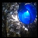
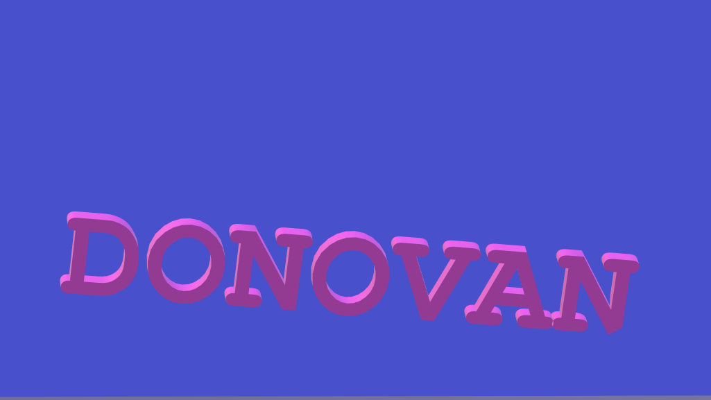

search
Enter your query...
more_vert
Creative Commons Attribution 4.0 International License
The MIT License (MIT) Copyright © 2021

Mark
arrow_drop_down
Accounts
Twitter
Facebook
add
More social sites
local_offer
Donovan
local_offer
Taylor
local_offer
Mark
local_offer
Arther
local_offer
Palladium
local_offer
Luke
local_offer
Byazantine
local_offer
Atriedes
local_offer
Paul
local_offer
Christian
local_offer
Platitude Squares
report
Odeafun Aflopean
help_outline
Report
Mark
Upside down, he grips the interior of his cave walls with suction cup hands, while eating orange mushrooms that glow in the dark.

Updates Coming
Maybe one day these graphs will do something or mean anything
Static Website